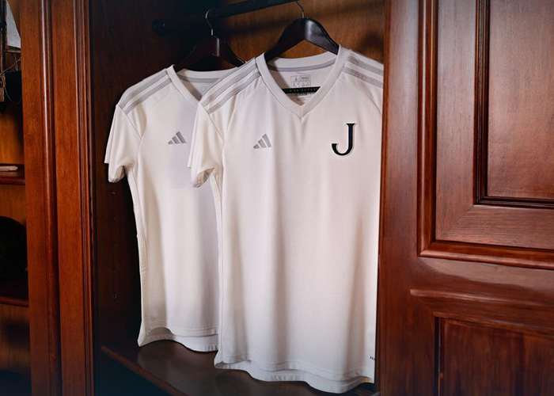
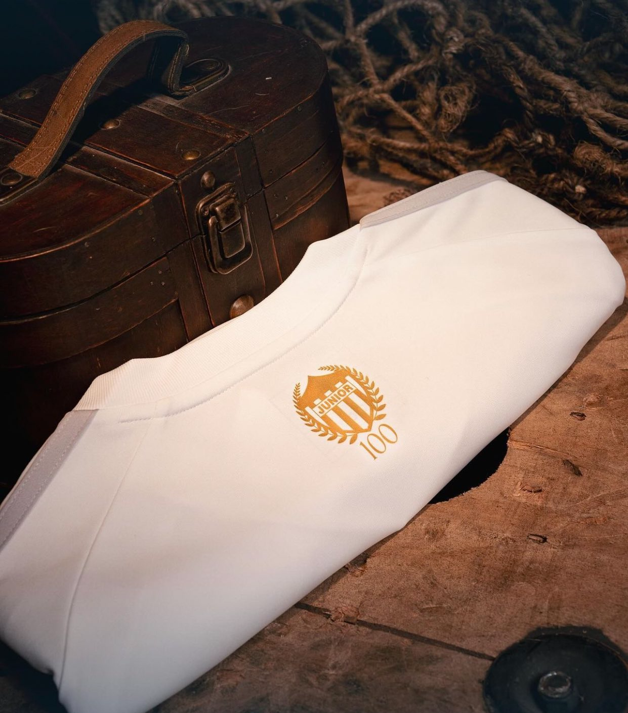
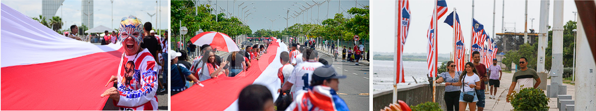

New York City FC presenta una actualización de su emblema, manteniendo su icónica identidad mientras introduce mejoras sutiles en diseño y tipografía. El nuevo escudo, diseñado por el tipógrafo Tobias Frere-Jones, refuerza la conexión con los fans y celebra el legado del club, preparándose para un futuro ambicioso.
Junior de Barranquilla ha celebrado su centenario con una emocionante serie de iniciativas gráficas y de branding que reflejan su rica historia y conexión con los aficionados. En agosto de 2024, el club presentó una camiseta conmemorativa diseñada en colaboración con Adidas, la cual simboliza no solo el orgullo de los 100 años de historia, sino también un nuevo comienzo para el equipo.
La nueva camiseta se caracteriza por un elegante color blanco, evocando la primera indumentaria del club. Este color no solo representa la pureza y la tradición, sino que también se complementa con detalles plateados que añaden un toque de distinción. El escudo del club se ha actualizado a una versión más sobria, con un diseño simplificado de la “J”, lo que marca un cambio significativo en la identidad visual del equipo. Esta camiseta se llevará en los partidos oficiales y está diseñada para captar la esencia del Junior y su legado en el fútbol colombiano.
Alejandro Arteta, presidente del Junior, expresó su orgullo por esta colaboración, enfatizando que la camiseta no solo es un uniforme, sino un símbolo del amor y la pasión de los aficionados. Tom Michiel Vinkenvleugel, de Adidas, también destacó que este proyecto es una celebración de la historia del club y su impacto en el fútbol colombiano, subrayando el compromiso de la marca en crear una pieza que represente adecuadamente este hito.
Las festividades no se limitan solo a la indumentaria. Junior ha planeado una serie de eventos significativos, incluyendo el despliegue de la bandera más larga del mundo, que recorrerá más de 10 kilómetros en Barranquilla. Este gesto no solo busca establecer un récord mundial, sino también generar un sentido de comunidad y pertenencia entre los aficionados. La magnitud de esta iniciativa ha sido bien recibida, y se espera que la celebración del centenario sea un evento memorable tanto para los seguidores del club como para la comunidad barranquillera en general.
